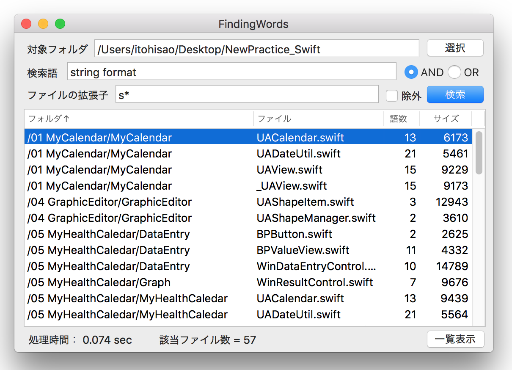

テキスト検索ツール１
ディレクトリをトラバースするしながら全文検索する
動作確認済み: MacOS 10.14.6 / Xcode 11.3.1
特定のフォルダの下にあるテキストファイルをサブフォルダも含め全て検索し、指定した検索語を含んだファイルの一覧をテーブルビューに表示する。対象フォルダは、オープンパネルにより指定することができる。

表示項目
検索語にヒットしたファイルをテーブルビューに表示する。項目は、フォルダ名、ファイル名、ファイルの中に含まれる検索語の数、ファイルのサイズ（バイト数）である。それぞれの項目をキーにしてレコードのソートを行うことができる。フォルダ名のソートはフォルダ名+ファイル名がキーとなる。列見出しをクリックすると昇順/降順のソートが繰り返される。
テーブルビューのレコードを選択しダブルクリックすると、そのファイルをエディタまたはブラウザで開くことができる。
一覧表示ボタンをクリックすると、テーブルビューのデータをファイルに出力し、上記と同じアプリケーションで開く。
出力先： ~/Documents/DirectoryTraverse.txt
次の検索条件の指定ができる
(1) 検索語の複数指定
検索語を複数指定することができる。ファイルに検索語が全て含まれている場合に判定が真となるAND検索、検索語が最低一つでも含まれていれば真となるOR検索に対応する。
![[findingWords5]](/lib/HTMLofImage.html?filename=/data/B40/findingWords5.png&title=findingWords5&width=600)
(2) 検索対象ファイルの絞り込み
ファイルの拡張子を指定して検索する対象ファイルを絞り込むことができる。拡張子の複数の入力、ワイルドカード（*)による指定が可能である。また除外チェックボックスを on にすれば、上記と逆に指定した拡張子のファイルは検索の対象外となる。
![[findingWords6]](/lib/HTMLofImage.html?filename=/data/B40/findingWords6.png&title=findingWords6&width=480)
(3) 検索方法の指定
検索方法は、Stringクラスのrange(of:)メソッドか、正規表現オブジェクトのいずれかを選択できる。前者は正規表現に対応していない。
![[findingWords2]](/lib/HTMLofImage.html?filename=/data/B40/findingWords2.png&title=findingWords2&width=500)
(4) 大文字/小文字の区別
検索のときアルファベットの大文字/小文字を区別するか、しないかを選択できる。
![[findingWords4]](/lib/HTMLofImage.html?filename=/data/B40/findingWords4.png&title=findingWords4&width=500)
ファイルを開くアプリケーションの選択
いずれかのアプリケーションをメニューから選ぶことができる。
![[findingWords3]](/lib/HTMLofImage.html?filename=/data/B40/findingWords3.png&title=findingWords3&width=500)
状態の保存
ウィンドウの大きさ、テーブルビューの列の幅、列の並びはアプリケーション終了時にユーザーデフォルトに保存する。ユーザによるこれらの変更は、アプリケーションが終了しても次回に引き継がれる。これらの状態はディクショナリに格納してユーザーデフォルトに書き出す。
メニューの設定「検索方法」「アプリケーション」「大文字/小文字」の選択値も引き継ぐ。
クラス関連図
!!!!! 作成中 !!!!
テキスト全文検索の技法について
それぞれ独立した章があるのでそちらを参照のこと